{kind=link}
{kind=link}
{kind=link}
{kind=link}
{kind=link}
{kind=link}
{kind=link}
{kind=link}
Foundation
Secure account, one Phone + one Computer policy, license status နဲ့ ကိုယ့် AI provider key ကို မှန်ကန်စွာ ပြင်ဆင်မယ်။
Portrait · Wedding · Graduation — ဖုန်းထဲမှာ Web Studio၊ Photoshop ထဲမှာ Pro Panel။ မျက်နှာမပြောင်းဘဲ နောက်ခံ၊ ဝတ်စုံ၊ အလင်းရောင် အကုန်ပြောင်းမယ်။
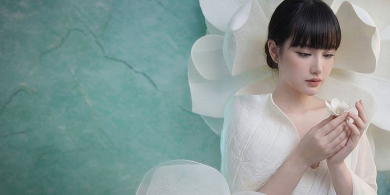
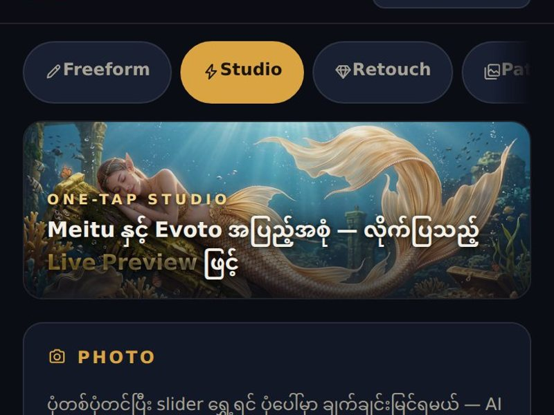
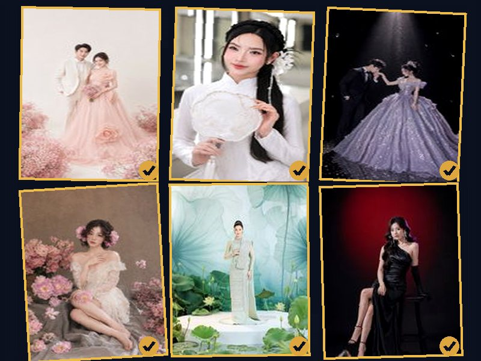
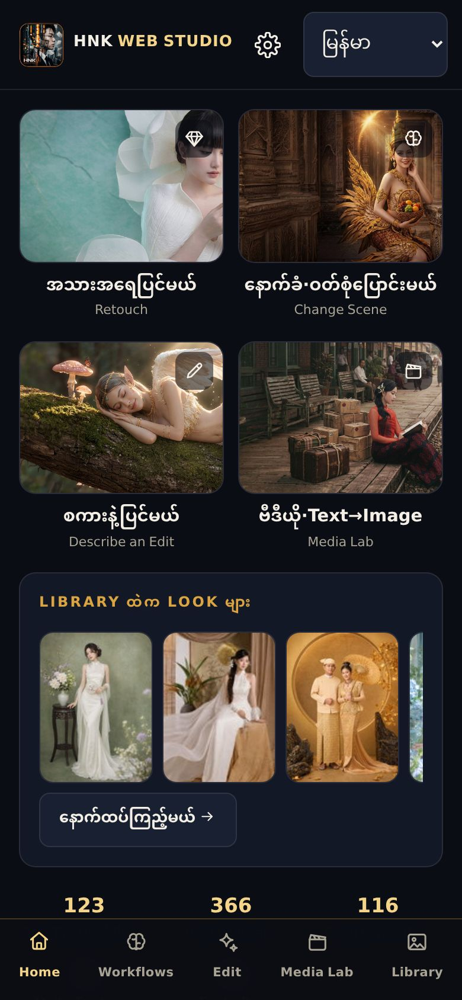
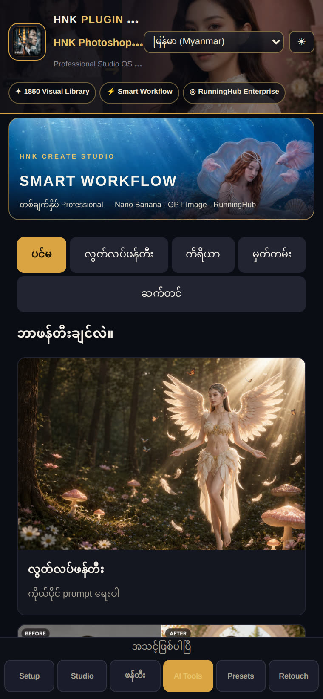
အောက်ကပုံတွေအားလုံးက app ထဲက Smart Workflow တွေရဲ့ တကယ့် BEFORE→AFTER card တွေပါ — နှိပ်ပြီး အကြီးကြည့်ပါ။
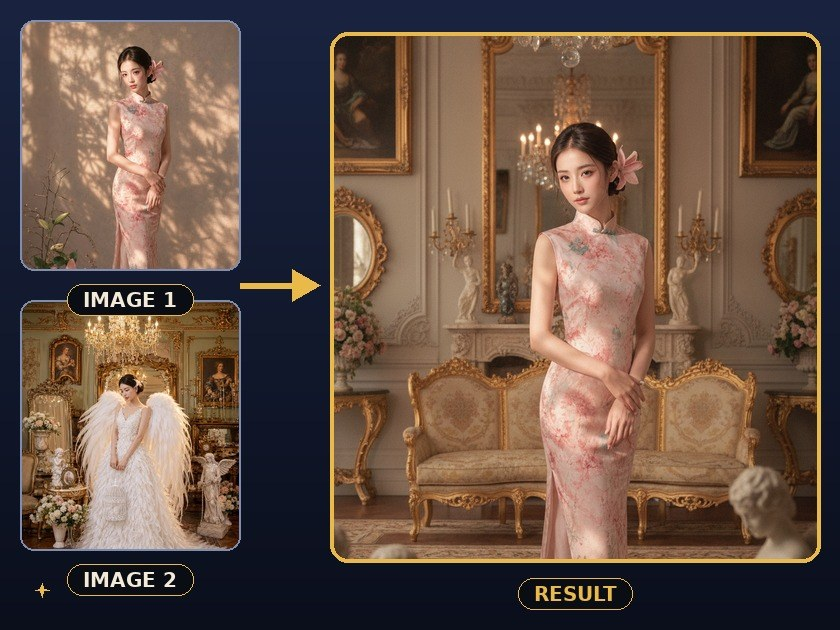
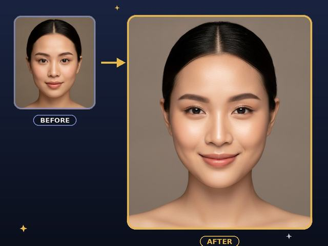
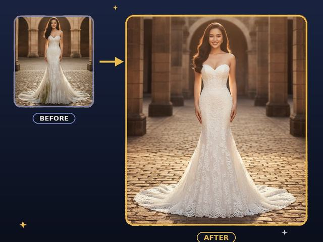
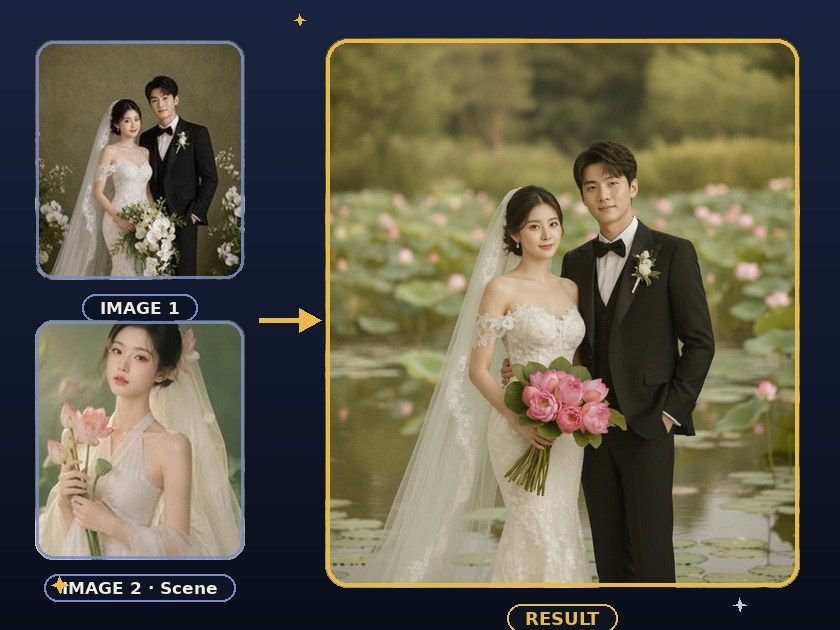
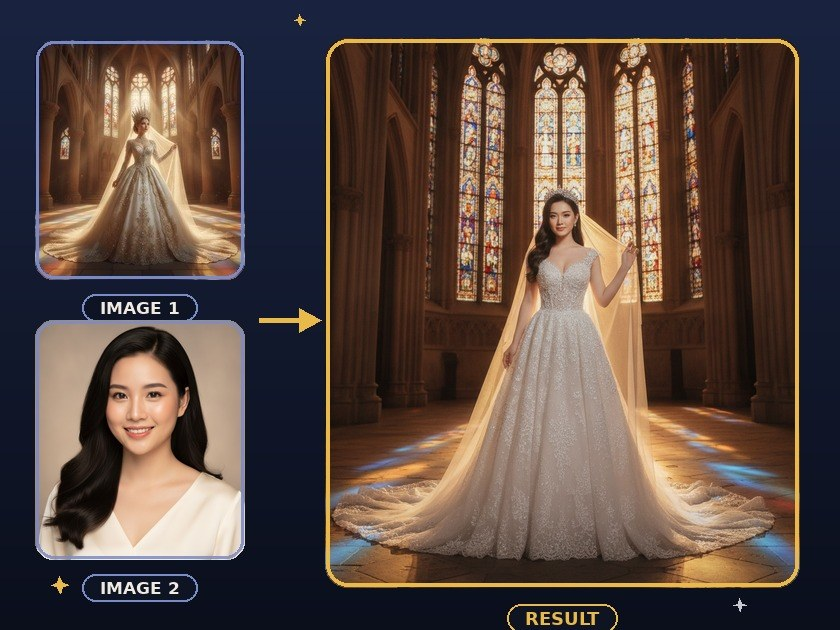
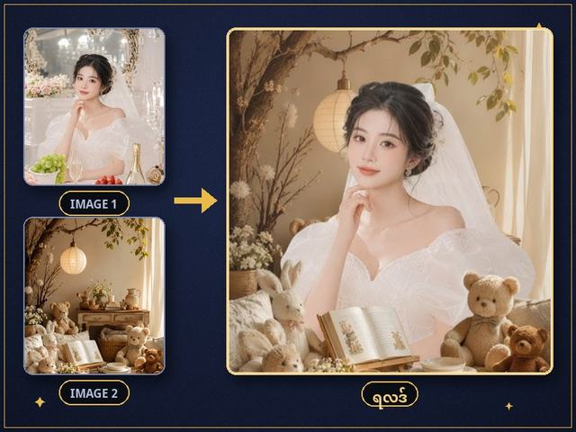
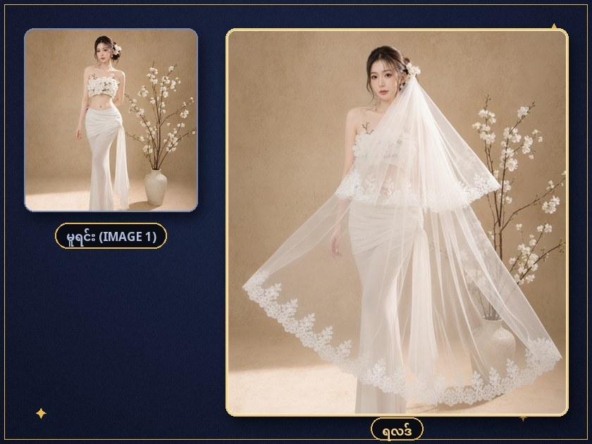
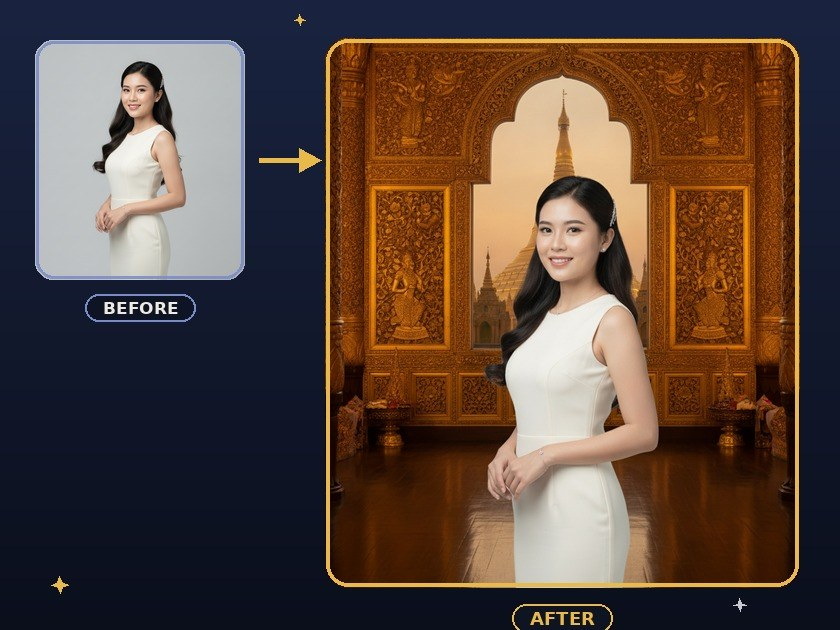
ပုံများအားလုံး — HNK workflow တွေနဲ့ တကယ်ထုတ်ထားတဲ့ audited card တွေ (8-pass verification)။ Stock/mockup မဟုတ်ပါ။
AI result တိုင်း masked layer group အဖြစ် ရောက်လာတယ် — ကြိုက်သလို ပြန်ဖျက်၊ ပြန်ညှိ၊ ပြန်ရောနိုင်တယ်။ Photoshop 24.2+ (Windows/macOS)။
Web App မှာ HNK အကောင့်ဝင်ပြီး သက်တမ်းရှိ plan ကို စစ်ပြီးမှ Account Center ထဲမှာ download ခလုတ် ပေါ်မယ်။ တစ်ကြိမ်ပေးရင် Web App နဲ့ Panel နှစ်ခုလုံး ရတယ်။
လက်ရှိ build — Panel v6.25.2 · 118 tests အောင်ပြီး
စကားနဲ့ပြင်တာ၊ One-Tap workflow အများစုရဲ့ default engine — အခမဲ့ key နဲ့ စလို့ရတယ်။
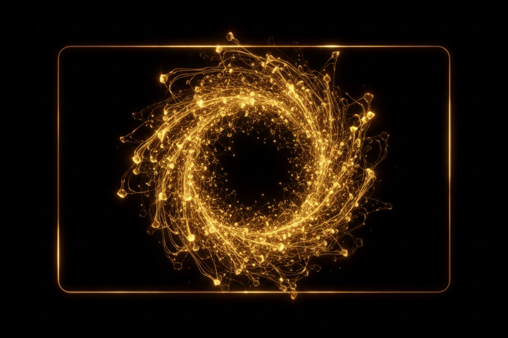
ENTERPRISE KEY~US$0.01–0.05 / image
Smart Workflow · V2 Retouch · Video · Upscale — credit စနစ်၊ သုံးသလောက်ပဲ ကျတယ်။
Alternative engine — ကိုယ့် OpenAI key ရှိရင် ချိတ်ပြီး သုံးလို့ရတယ်။
HNK Web Studio ကို သုံးဖို့ အကောင့်နဲ့ Premium လိုပါတယ် — AI engine တွေကို ကိုယ့် key နဲ့ တိုက်ရိုက်ချိတ်တာပါ။ Gemini key ကို aistudio.google.com/apikey မှာ အခမဲ့ရတယ် (နေ့စဉ် အခမဲ့ quota ပါ — စမ်းသုံးဖို့ လုံလောက်တယ်)။ RunningHub က credit စနစ် — ပုံတစ်ပုံကို ခန့်မှန်း US$0.01–0.05 လောက်၊ video ဆို ပိုကျတယ်; အကြမ်းဖျင်း — တစ်လ studio သုံး ပုံရာချီ ထုတ်ရင်တောင် ဒေါ်လာ အနည်းငယ်ပဲ ကျပါတယ်။ OpenAI က ပုံအလိုက် ကျသင့်တယ် — မထည့်လည်း app အပြည့် သုံးလို့ရတယ်။ Key တွေကို ဒီ browser ထဲမှာပဲ သိမ်းထားပြီး သင်ရွေးထားတဲ့ AI provider ဆီကိုသာ ပို့ပါတယ် — HNK server တွေကနေ ဘယ်တော့မှ မဖြတ်သန်းပါ။
Register → Admin approval → Device setup → AI Tools → Photoshop Panel ကို လက်တွေ့လိုက်လုပ်နိုင်တဲ့ အဆင့်လိုက် သင်ခန်းစာများ။
Secure account, one Phone + one Computer policy, license status နဲ့ ကိုယ့် AI provider key ကို မှန်ကန်စွာ ပြင်ဆင်မယ်။
Portrait, wedding, background, retouch, Media Lab နဲ့ batch workflow တွေကို တကယ့် studio job အတိုင်း လေ့ကျင့်မယ်။
Registered Computer ပေါ်မှာ secure download, pairing, version update နဲ့ layer/mask delivery flow ကို လေ့လာမယ်။
Administrator အတည်ပြုပြီး license သတ်မှတ်မှ Web App နဲ့ Panel ပွင့်ပါမယ်။ တိကျတဲ့ငွေပမာဏကို Account Center သို့မဟုတ် HNK Studio မှာ စစ်ဆေးပါ။
Short project သို့မဟုတ် စမ်းသုံးကာလအတွက်။
Seasonal portrait production အတွက်။
Wedding season နဲ့ regular studio work အတွက်။
တစ်နှစ်စာ production access; custom expiry ကို Admin သတ်မှတ်နိုင်ပါတယ်။
Email + password နဲ့ account ဖွင့်ပါ။ Admin approve မဖြစ်သေးခင် licensed tools ကို server က ပိတ်ထားပါမယ်။
Phone တစ်လုံး၊ Computer တစ်လုံးသာ။ Web App Computer နဲ့ Photoshop Panel က Computer slot တစ်ခုတည်း မျှဝေပါတယ်။
Account ထဲက secure download ကိုနှိပ်ပြီး မိနစ်အနည်းငယ်သာသက်တမ်းရှိ link ရယူပါ။ Panel ကို pairing code နဲ့ချိတ်ပါ။
Registration က ချက်ချင်း tools မဖွင့်ပါဘူး။ HNK Admin approval နဲ့ active license ရပြီးမှ Student Web App အသုံးပြုနိုင်ပါတယ်။ Secure session ကြောင့် password ကို စာမျက်နှာတိုင်းမှာ ပြန်ရိုက်စရာ မလိုပါ။
Device အသစ်သုံးလိုပါက ကိုယ်တိုင် slot ဖြုတ်လို့မရပါ။ HNK Studio ကို ဆက်သွယ်ပြီး audited Admin Reset လုပ်ပါ။
ရတယ် — Web Studio က ဖုန်း browser အတွက် အရင်ဆုံး ဒီဇိုင်းထုတ်ထားတာ။ Install မလို။ Home screen ထည့်ထားရင် app တစ်ခုလိုပဲ ဖွင့်လို့ရတယ်။ Photoshop Panel ကတော့ ကွန်ပျူတာ (Windows/macOS) အတွက်ပါ။
Photoshop 24.2 (2023) နဲ့အထက် — UXP panel စနစ်ကို ထောက်ပံ့တဲ့ ဗားရှင်းတိုင်း ရတယ်။ Creative Cloud ကနေ ccx ဖိုင်ကို double-click တစ်ချက်နဲ့ ထည့်လို့ရတယ်။
Gemini key ကို aistudio.google.com/apikey မှာ အခမဲ့ရတယ် — စမ်းသုံးဖို့ နေ့စဉ် အခမဲ့ quota လုံလောက်တယ်။ RunningHub နဲ့ OpenAI ကတော့ သုံးသလောက် ကျသင့်တဲ့ စနစ် — အသေးစိတ်ကို အပေါ်က “Engines” အပိုင်းမှာ ရှင်းပြထားတယ်။